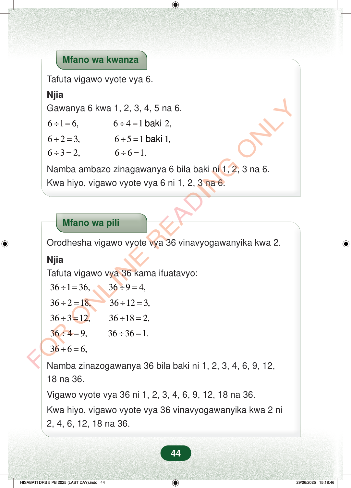

Mfano wa kwanzaTafuta vigawo vyote vya 6.NjiaGawanya 6 kwa 1, 2, 3, 4, 5 na 6.616, 6412,÷=÷=baki623, 6511,÷=÷=baki632, 661.÷=÷=Namba ambazo zinagawanya 6 bila baki ni 1, 2, 3 na 6.Kwa hiyo, vigawo vyote vya 6 ni 1, 2, 3 na 6.Mfano wa piliOrodhesha vigawo vyote vya 36 vinavyogawanyika kwa 2.NjiaTafuta vigawo vya 36 kama ifuatavyo:36136, 3694,÷=÷=36218, 36123,÷=÷=36312, 36182,÷=÷=3649, 36361.÷=÷=3666,÷=Namba zinazogawanya 36 bila baki ni 1, 2, 3, 4, 6, 9, 12,18 na 36.Vigawo vyote vya 36 ni 1, 2, 3, 4, 6, 9, 12, 18 na 36.Kwa hiyo, vigawo vyote vya 36 vinavyogawanyika kwa 2 ni2, 4, 6, 12, 18 na 36.44
Mfano wa kwanza
Tafuta vigawo vyote vya 6.
Njia Gawanya 6 kwa 1, 2, 3, 4, 5 na 6.
6 1 6, 6 4 1 2, ÷ = ÷ = baki
6 2 3, 6 5 1 1, ÷ = ÷ = baki 6 3 2, 6 6 1. ÷ = ÷ =
Namba ambazo zinagawanya 6 bila baki ni 1, 2, 3 na 6. Kwa hiyo, vigawo vyote vya 6 ni 1, 2, 3 na 6.
Mfano wa pili
Orodhesha vigawo vyote vya 36 vinavyogawanyika kwa 2.
Njia Tafuta vigawo vya 36 kama ifuatavyo:
36 1 36, 36 9 4, ÷ = ÷ =
36 2 18, 36 12 3, ÷ = ÷ =
36 3 12, 36 18 2, ÷ = ÷ =
36 4 9, 36 36 1. ÷ = ÷ =
36 6 6, ÷ =
Namba zinazogawanya 36 bila baki ni 1, 2, 3, 4, 6, 9, 12, 18 na 36.
Vigawo vyote vya 36 ni 1, 2, 3, 4, 6, 9, 12, 18 na 36.
Kwa hiyo, vigawo vyote vya 36 vinavyogawanyika kwa 2 ni 2, 4, 6, 12, 18 na 36.
44
Mfano wa kwanza unaonyesha vigawo vya 6. Namba 6 inagawanywa kwa 1, 2, 3, 4, 5 na 6, na vigawo vyake ni 1, 2, 3 na 6.Mfano wa kwanzaTafuta vigawo vyote vya 6.NjiaGawanya 6 kwa 1, 2, 3, 4, 5 na 6.<math><mrow><mn>6</mn><mo>÷</mo><mn>1</mn><mo>=</mo><mn>6</mn><mo separator="true">,</mo></mrow></math><math><mrow><mn>6</mn><mo>÷</mo><mn>2</mn><mo>=</mo><mn>3</mn><mo separator="true">,</mo></mrow></math><math><mrow><mn>6</mn><mo>÷</mo><mn>3</mn><mo>=</mo><mn>2</mn><mo separator="true">,</mo></mrow></math><math><mrow><mn>6</mn><mo>÷</mo><mn>4</mn><mo>=</mo><mn>1</mn><mtext> </mtext><mtext>baki</mtext><mtext> </mtext><mn>2</mn><mo separator="true">,</mo></mrow></math><math><mrow><mn>6</mn><mo>÷</mo><mn>5</mn><mo>=</mo><mn>1</mn><mtext> </mtext><mtext>baki</mtext><mtext> </mtext><mn>1</mn><mo separator="true">,</mo></mrow></math><math><mrow><mn>6</mn><mo>÷</mo><mn>6</mn><mo>=</mo><mn>1.</mn></mrow></math>Namba ambazo zinagawanya 6 bila baki ni 1, 2, 3 na 6.Kwa hiyo, vigawo vyote vya 6 ni 1, 2, 3 na 6.Mfano wa pili unaonyesha vigawo vya 36 vinavyogawanyika kwa 2. Vigawo vyote vya 36 ni 1, 2, 3, 4, 6, 9, 12, 18 na 36, na vinavyogawanyika kwa 2 ni 2, 4, 6, 12, 18 na 36.Mfano wa piliOrodhesha vigawo vyote vya 36 vinavyogawanyika kwa 2.NjiaTafuta vigawo vya 36 kama ifuatavyo:<math><mrow><mn>36</mn><mo>÷</mo><mn>1</mn><mo>=</mo><mn>36</mn><mo separator="true">,</mo></mrow></math><math><mrow><mn>36</mn><mo>÷</mo><mn>2</mn><mo>=</mo><mn>18</mn><mo separator="true">,</mo></mrow></math><math><mrow><mn>36</mn><mo>÷</mo><mn>3</mn><mo>=</mo><mn>12</mn><mo separator="true">,</mo></mrow></math><math><mrow><mn>36</mn><mo>÷</mo><mn>4</mn><mo>=</mo><mn>9</mn><mo separator="true">,</mo></mrow></math><math><mrow><mn>36</mn><mo>÷</mo><mn>6</mn><mo>=</mo><mn>6</mn><mo separator="true">,</mo></mrow></math><math><mrow><mn>36</mn><mo>÷</mo><mn>9</mn><mo>=</mo><mn>4</mn><mo separator="true">,</mo></mrow></math><math><mrow><mn>36</mn><mo>÷</mo><mn>12</mn><mo>=</mo><mn>3</mn><mo separator="true">,</mo></mrow></math><math><mrow><mn>36</mn><mo>÷</mo><mn>18</mn><mo>=</mo><mn>2</mn><mo separator="true">,</mo></mrow></math><math><mrow><mn>36</mn><mo>÷</mo><mn>36</mn><mo>=</mo><mn>1.</mn></mrow></math>Namba zinazogawanya 36 bila baki ni 1, 2, 3, 4, 6, 9, 12, 18 na 36.Vigawo vyote vya 36 ni 1, 2, 3, 4, 6, 9, 12, 18 na 36.Kwa hiyo, vigawo vyote vya 36 vinavyogawanyika kwa 2 ni 2, 4, 6, 12, 18 na 36.